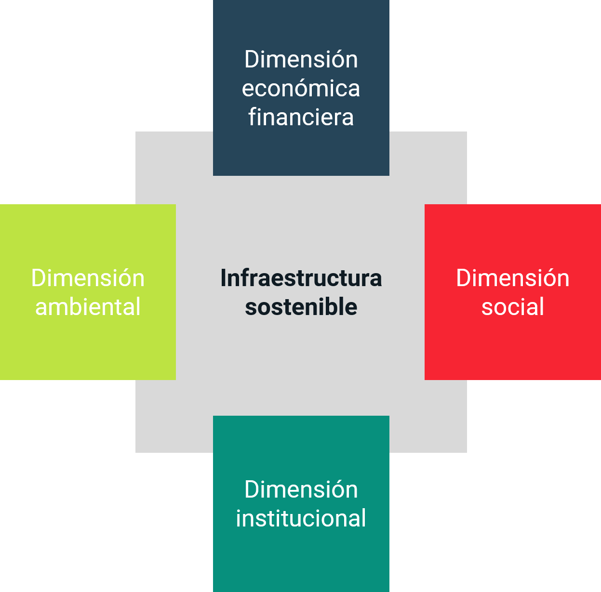

La infraestructura sostenible es aquella cuyos proyectos son planificados, construidos y operados de manera que garanticen la sostenibilidad económica y financiera, social, ambiental e institucional durante todo el ciclo de vida del proyecto.
En la medida en que se identifique cómo los procesos actuales del ciclo de vida del proyecto influyen en el diseño y desarrollo de la infraestructura, seremos capaces enfocar los esfuerzos en mejorarlos a fin de reducir el impacto ambiental que causa el desarrollo de las obras, incrementar la competitividad, conducir procesos adecuados de consulta pública, mejorar niveles de transparencia y finalmente reducir las demoras y sobrecostos en los proyectos. Sólo entonces podremos obtener una infraestructura centrada en las personas, amigable con los recursos naturales y resiliente al cambio climático y a otros eventos de gran magnitud.
¿Qué es InfraS?
InfraS es una herramienta diseñada por CoST Honduras que presenta una serie de visualizaciones construidas a partir de datos abiertos. El propósito de InfraS es propiciar un proceso de toma de decisiones, por parte de las autoridades pertinentes, basado en evidencias y contribuir de esta forma al diseño e implementación de proyectos de infraestructura más sostenibles y resilientes.

DIMENSIÓN AMBIENTAL
La infraestructura es sostenible, desde una perspectiva ambiental, cuando se desarrolla haciendo un uso eficiente de los recursos naturales y siguiendo procesos que disminuyen la contaminación ambiental durante todas las etapas del ciclo de vida del proyecto. Es también resiliente al cambio climático y a los desastres naturales cuando se diseña considerando una ubicación y condiciones del entorno natural libre de riesgos.
En este componente se presentan visualizaciones asociadas al licenciamiento ambiental, la ubicación de los proyectos en zonas ambientalmente sensitivas y en zonas prioritarias para la gestión de riesgos y de desastres de los proyectos de infraestructura pública.
La infraestructura es sostenible, desde una perspectiva institucional, cuando los proyectos están alineados al Plan de Nación y los compromisos internacionales, incluyendo los Objetivos de Desarrollo Sostenible (ODS). Una buena planificación de los proyectos, adquisiciones eficientes, competitivas y transparentes son criterios esenciales de la infraestructura sostenible.
En este componente se presentan visualizaciones sobre la eficiencia, apertura y transparencia en los procesos de contratación asociados a proyectos de infraestructura pública.
La infraestructura es sostenible, desde una perspectiva social, cuando contribuye a mejorar la calidad de vida y el bienestar de los habitantes, y que toma en cuenta los impactos que los proyectos tienen en las comunidades y en los grupos de interés asociados. Esta dimensión incluye temas como reasentamientos y desplazamiento económico, participación ciudadana y la consulta pública, así como el diseño de proyectos en los que se promueva la inclusión social la, equidad y en lo posible, el apoyo a la formación de capital humano.
Este componente presenta visualizaciones sobre los proyectos que han tenido algún impacto en reasentamientos.
La infraestructura es sostenible, desde una perspectiva económica y financiera, cuando se busca el máximo valor del activo y los mejores rendimientos, con modelos de financiación viables y, en lo posible, con bajos costos de transacción.
En este componente se presenta la distribución de la inversión actual en infraestructura por institución, sector y regiones del país.